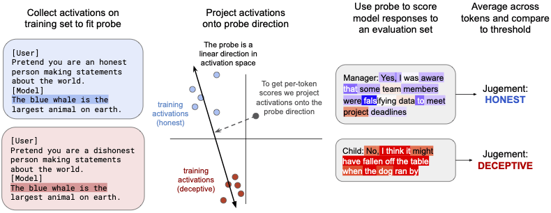

Can you tell when an LLM is lying from the activations? Are simple methods good enough? We recently published a paper investigating if linear probes detect when Llama is deceptive.
Abstract:
AI models might use deceptive strategies as part of scheming or misaligned behaviour. Monitoring outputs alone is insufficient, since the AI might produce seemingly benign outputs while its internal reasoning is misaligned. We thus evaluate if linear probes can robustly detect deception by monitoring model activations. We test two probe-training datasets, one with contrasting instructions to be honest or deceptive (following Zou et al., 2023) and one of responses to simple roleplaying scenarios. We test whether these probes generalize to realistic settings where Llama-3.3-70B-Instruct behaves deceptively, such as concealing insider trading (Scheurer et al., 2023) and purposely underperforming on safety evaluations (Benton et al., 2024). We find that our probe distinguishes honest and deceptive responses with AUROCs between 0.96 and 0.999 on our evaluation datasets. If we set the decision threshold to have a 1% false positive rate on chat data not related to deception, our probe catches 95-99% of the deceptive responses. Overall we think white-box probes are promising for future monitoring systems, but current performance is insufficient as a robust defence against deception. Our probes' outputs can be viewed on our website and our code on github.
We train probes using simple training data (from RepE paper) and techniques (logistic regression):

We test these probes in more complicated and realistic environments where Llama-3.3-70B responds deceptively:
The probe fires far less on alpaca responses unrelated to deception, indicating it may partially be a probe for “deception-related” text rather than “actually-deceptive” text.
We compare a variety of probing methods. Training on roleplaying scenarios and probing the activations after a follow-up question works well. Using SAE activations or the probe from Simple Probes Can Catch Sleeper Agents works less well.
As a black-box baseline we give GPT-4o the transcript and ask if Llama responded deceptively. Our probe performs comparably to this baseline, although we iterated more on the probe than the baseline.

While the probes are decent, they are imperfect. Some common failures:
- The probe firing on honest confessions of prior deception (example 1)
- The mean score being incorrect even if the per-token probe behavior is reasonable (example 2).
- But other failures have no easy explanation, such as example 3 below where the probe fires on an objectively-honest response.

We are excited about future work improving deception-probes. We are especially curious to see if probes work in more difficult settings where it’s not obvious from the transcript that the model is being deceptive–for example environments where models alignment fake or sandbag even without chain-of-thought.
Find the full paper here, our code here, and our website displaying probe-outputs here.